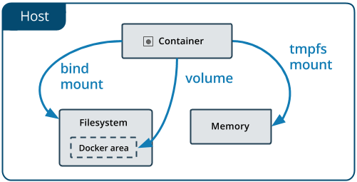

<!DOCTYPE html>
<html lang="zh" class="loading">
<head><meta name="generator" content="Hexo 3.9.0">
    <meta charset="UTF-8">
    <meta http-equiv="X-UA-Compatible" content="IE=edge,chrome=1">
    <meta name="viewport" content="width=device-width, minimum-scale=1.0, maximum-scale=1.0, user-scalable=no">
    <title>Docker官方起步指南学习笔记③——数据持久化之Volume - WhiteRobe&#39;s Blog</title>
    <meta name="apple-mobile-web-app-capable" content="yes">
    <meta name="apple-mobile-web-app-status-bar-style" content="black-translucent">
    <meta name="google" content="notranslate">
    <link href="https://cdnjs.cloudflare.com/ajax/libs/KaTeX/0.11.0/katex.min.css" rel="stylesheet">
    <meta name="keywords" content="WhiteRobe, Blog,"> 
    <meta name="description" content="着眼实例，从最简单的开始；你觉得再简单不过的东西，或许在别人眼里那就是悬崖。而我，愿作那攀岩绳。,本学习笔记 Base on ——

Manage data in &amp;gt;Docker&amp;lt;


 数据持久化

一个常见的应用将由两部分组成：控制和数据。Docker中的数据持久化将由Daemo,"> 
    <meta name="author" content="WhiteRobe"> 
    <link rel="alternative" href="atom.xml" title="WhiteRobe&#39;s Blog" type="application/atom+xml"> 
    <link rel="icon" href="/img/favicon.png"> 
    <link rel="stylesheet" href="//cdn.jsdelivr.net/npm/gitalk@1/dist/gitalk.css">
    <link rel="stylesheet" href="/css/animate.css">
    <link rel="stylesheet" href="/css/fira_code.css">
    <link rel="stylesheet" href="/css/diaspora.css">
    <script async src="https://busuanzi.ibruce.info/busuanzi/2.3/busuanzi.pure.mini.js"></script>
    
        <!--站内搜索API-->
        <script src="https://cdn.jsdelivr.net/algoliasearch/3/algoliasearch.min.js"></script>
        <link rel="stylesheet" href="https://cdn.jsdelivr.net/npm/instantsearch.css@7.3.1/themes/algolia-min.css" integrity="sha256-HB49n/BZjuqiCtQQf49OdZn63XuKFaxcIHWf0HNKte8=" crossorigin="anonymous">
        <script src="https://cdn.jsdelivr.net/npm/instantsearch.js@3.4.0/dist/instantsearch.production.min.js" integrity="sha256-pM0n88cBFRHpSn0N26ETsQdwpA7WAXJDvkHeCLh3ujI=" crossorigin="anonymous"></script>
    
    <!-- <script async src="//pagead2.googlesyndication.com/pagead/js/adsbygoogle.js"></script>
    <script>
          // No more ads!
         (adsbygoogle = window.adsbygoogle || []).push({
              google_ad_client: "ca-pub-8691406134231910",
              enable_page_level_ads: true
         });
    </script>
    <script async custom-element="amp-auto-ads"
        src="https://cdn.ampproject.org/v0/amp-auto-ads-0.1.js">
    </script> -->
</head>
</html>
<body class="loading">
    <span id="config-title" style="display:none">WhiteRobe&#39;s Blog</span>
    <div id="loader"></div>
    <div id="single">
    <div id="top" style="display: block; display: block;position: fixed; top: 0px;">
    <div class="bar" style="width: 0;"></div>
    <a class="icon-home image-icon" href="javascript:;" data-url="https://blog.whiterobe.top"></a>
    <div title="播放/暂停" class="icon-play"></div>
    <h3 class="subtitle">Docker官方起步指南学习笔记③——数据持久化之Volume</h3>
    <div class="social">
        <!--<div class="like-icon">-->
            <!--<a href="javascript:;" class="likeThis active"><span class="icon-like"></span><span class="count">76</span></a>-->
        <!--</div>-->
        <div style="font-size: 1rem;margin-right: -10px">
          分享此文：
        </div>
        <div>
          <div class="share">
              <a title="获取文章地址二维码" class="icon-scan" href="javascript:;"></a>
          </div>
          <div id="qr"></div>
        </div>
    </div>
    <div class="scrollbar"></div>
</div>

    <div class="section" style="margin-top: 50px">
        <div class="article">
    <div class='main'>
        <h1 class="title">Docker官方起步指南学习笔记③——数据持久化之Volume</h1>
        <div class="stuff">
            <span>九月 13, 2019</span>
            <span id="busuanzi_container_page_pv" class="busuanzi_page" style="display:none">本文总阅读量<div id="busuanzi_value_page_pv" style="display: inline;">1</div>次</span>
            
  <ul class="post-tags-list"><li class="post-tags-list-item"><a class="post-tags-list-link" href="/tags/Docker/">Docker</a></li><li class="post-tags-list-item"><a class="post-tags-list-link" href="/tags/版本控制/">版本控制</a></li></ul>


        </div>
        <div class="low-resolution-warn-info">当前设备屏幕尺寸过小，推荐使用PC模式浏览。</div>
        <div class="content markdown">
            <p>本学习笔记 Base on ——</p>
<blockquote>
<p>Manage data in <a href="https://docs.docker.com/storage/" target="_blank" rel="noopener">&gt;Docker&lt;</a></p>
</blockquote>
<hr>
<h1 id="数据持久化"><a class="markdownIt-Anchor" href="#数据持久化"></a> 数据持久化</h1>
<blockquote>
<p>一个常见的应用将由两部分组成：<strong>控制</strong>和<strong>数据</strong>。Docker中的数据持久化将由Daemon实现和进行控制，数据卷的生命周期与容器/镜像无关。<br>
为此，Docker引入数据卷的概念。与直接在容器中(例如数据库)写入数据数据不同，数据卷（VOLUME）和数据挂载(BIND MOUNT)的引入将有效地解决以下问题：</p>
<ul>
<li>数据的共享问题/</li>
<li>将数据与容器、宿主机解除耦合，让开发者像使用U盘一样移动数据。</li>
<li>提升数据的读写性能（<a href="https://docs.docker.com/storage/storagedriver/" target="_blank" rel="noopener">&gt;参考资料&lt;</a>）。</li>
</ul>
</blockquote>
<h2 id="volume-和-bind-mount-的区别"><a class="markdownIt-Anchor" href="#volume-和-bind-mount-的区别"></a> VOLUME 和 BIND MOUNT 的区别</h2>
<ul>
<li><strong>数据卷</strong> (VOLUME)将文件存放在宿主机的指定位置，是Docker系统中最佳的数据保存方式。</li>
<li><strong>挂载</strong> (BIND MOUNT)可以将文件存放在宿主机的任意位置上，非Docker进程可以任意修改这些数据(而VOLUME方式则不可以)。</li>
<li>PS:<strong>临时挂载</strong>(TMPFS MOUNT)的数据挂载方式，其只把数据写入Memory中而不访问宿主机的文件系统，通过<a href="https://docs.docker.com/get-started/part4/" target="_blank" rel="noopener">&gt;Swarm&lt;</a>等方式进行数据与容器的挂载。</li>
</ul>
<p align="center">
  
</p>
<hr>
<h1 id="volume-的使用"><a class="markdownIt-Anchor" href="#volume-的使用"></a> VOLUME 的使用</h1>
<blockquote>
<p>参考指南<a href="https://docs.docker.com/storage/volumes/" target="_blank" rel="noopener">&gt;地址&lt;</a></p>
</blockquote>
<h3 id="数据卷容器"><a class="markdownIt-Anchor" href="#数据卷容器"></a> 数据卷容器</h3>
<blockquote>
<p>为了方便数据的迁移、备份，常常制作用于存放数据的数据卷容器。其一般只是用数据库映像，且永不使用<code>docker run</code>运行该映像。</p>
</blockquote>
<p><strong>数据卷容器</strong> 就像一个容器，但数据卷容器只存放数据而不部署、运行任何业务应用，允许其它映像的实例容器进行挂载和使用。</p>
<h3 id="创建-查看和管理一个数据卷"><a class="markdownIt-Anchor" href="#创建-查看和管理一个数据卷"></a> 创建、查看和管理一个数据卷</h3>
<p>创建一个数据卷并列出其信息：</p>
<figure class="highlight shell"><table><tr><td class="gutter"><pre><span class="line">1</span><br><span class="line">2</span><br><span class="line">3</span><br></pre></td><td class="code"><pre><span class="line">docker volume create my-vol</span><br><span class="line">docker volume ls</span><br><span class="line">docker volume inspect my-vol</span><br></pre></td></tr></table></figure>
<p>移除该数据卷：</p>
<figure class="highlight shell"><table><tr><td class="gutter"><pre><span class="line">1</span><br></pre></td><td class="code"><pre><span class="line">docker volume rm my-vol</span><br></pre></td></tr></table></figure>
<h3 id="挂载第一个与容器生命周期无关的数据卷"><a class="markdownIt-Anchor" href="#挂载第一个与容器生命周期无关的数据卷"></a> 挂载第一个与容器生命周期无关的数据卷</h3>
<blockquote>
<p><strong>Alpine</strong> 系统是一个基于BusyBox的Linux系统，其大小只有5mb左右，其开发者现已加入docker公司，有望称为Docker的默认基准映像。</p>
</blockquote>
<ol>
<li>首先，我们在Shell的根目录下创建一个文件夹<code>vol</code>。并在其中创建任意一个<code>test.txt</code>文件，其中包含若干字符。(对于windows用户，该根地址应为<code>C:\Users\用户名\</code>，此时应将C盘设为Shared Drive[在Setting-Shared Drives中设置])</li>
<li>拉取alpine映像。但我们此处将依靠<code>docker run</code>指令，在拉取映像的同时执行容器。即下面这段指令：</li>
</ol>
<figure class="highlight shell"><table><tr><td class="gutter"><pre><span class="line">1</span><br></pre></td><td class="code"><pre><span class="line">docker run -dit --name=testImage -v ~/vol:/container_vol alpine</span><br></pre></td></tr></table></figure>
<p>该指令包含：</p>
<ul>
<li>-d 后台静默模式启动</li>
<li>-i 交互模式</li>
<li>-t 分配独立的TTY，避免多终端干扰</li>
<li>-v 为容器挂载数据卷</li>
<li>–name 容器实例的名字</li>
</ul>
<blockquote>
<p>Tips：当指令的可选项不带任何参数时，可以缩略，如<code>-dit</code>。<br>
注意：-v 后的地址必须全部为<strong>绝对地址</strong>！</p>
</blockquote>
<p>其中，<code>-v</code>指令将容器内的<code>container_vol</code>文件夹向宿主机的<code>vol</code>文件夹作映射，此后该文件夹就成为与容器生命周期无关的数据卷。</p>
<blockquote>
<p><code>-v host_dir:/container_dir</code></p>
</blockquote>
<ol start="3">
<li>进入容器，并查看相关数据：</li>
</ol>
<figure class="highlight shell"><table><tr><td class="gutter"><pre><span class="line">1</span><br></pre></td><td class="code"><pre><span class="line">docker exec -it testImage sh</span><br></pre></td></tr></table></figure>
<figure class="highlight shell"><table><tr><td class="gutter"><pre><span class="line">1</span><br><span class="line">2</span><br><span class="line">3</span><br></pre></td><td class="code"><pre><span class="line">cd /container_vol </span><br><span class="line">ls</span><br><span class="line">cat test.txt</span><br></pre></td></tr></table></figure>
<p>终端将输出宿主机中<code>test.txt</code>中的字符。</p>
<ol start="4">
<li>尝试用<code>exit</code>退出容器，并关闭、重启容器：</li>
</ol>
<figure class="highlight shell"><table><tr><td class="gutter"><pre><span class="line">1</span><br><span class="line">2</span><br><span class="line">3</span><br><span class="line">4</span><br></pre></td><td class="code"><pre><span class="line">exit</span><br><span class="line">docker stop testImage </span><br><span class="line">docker rm testImage </span><br><span class="line">docker run -dit --name=testImage -v ~/vol:/container_vol alpine</span><br></pre></td></tr></table></figure>
<ol start="5">
<li>可以发现test.txt文件依旧可以读取，而不会随着容器关闭而消失。(此时可以尝试在非数据卷目录下进行<code>mkdir</code>任意文件，容器重启后该文件将消失)。</li>
</ol>
<blockquote>
<p>Tips:指令<code>docker volume rm $(docker volume ls -q)</code>可以快速移除所有注册过的数据卷。</p>
</blockquote>

            <!--[if lt IE 9]><script>document.createElement('audio');</script><![endif]-->
            <audio id="audio" loop="1" preload="auto" controls="controls" data-autoplay="true">
                <source type="audio/mpeg" src="">
            </audio>
            
                <ul id="audio-list" style="display:none">
                    
                        
                            <li title='0' data-url='https://gitee.com/shenpibaipao/wr-diaspora/raw/master/source/audio/jinyecheng.mp3'></li>
                        
                    
                        
                            <li title='1' data-url='https://gitee.com/shenpibaipao/wr-diaspora/raw/master/source/audio/juhuatai.mp3'></li>
                        
                    
                        
                            <li title='2' data-url='https://gitee.com/shenpibaipao/wr-diaspora/raw/master/source/audio/MapleStory.mp3'></li>
                        
                    
                </ul>
            
        </div>
        
    <div id='gitalk-container' class="comment link"
        data-ae='true'
        data-ci='5b763306cd7b9d9c3981'
        data-cs='c31e9bf78a807055f5439caea747b09d1d9c8f18'
        data-r='image-blog.io'
        data-o='WhiteRobe'
        data-a='WhiteRobe'
        data-d='false'
    >查看评论</div>


    </div>
    
        <div class='side'>
            <ol class="toc"><li class="toc-item toc-level-1"><a class="toc-link" href="#数据持久化"><span class="toc-number">1.</span> <span class="toc-text"> 数据持久化</span></a><ol class="toc-child"><li class="toc-item toc-level-2"><a class="toc-link" href="#volume-和-bind-mount-的区别"><span class="toc-number">1.1.</span> <span class="toc-text"> VOLUME 和 BIND MOUNT 的区别</span></a></li></ol></li><li class="toc-item toc-level-1"><a class="toc-link" href="#volume-的使用"><span class="toc-number">2.</span> <span class="toc-text"> VOLUME 的使用</span></a><ol class="toc-child"><li class="toc-item toc-level-3"><a class="toc-link" href="#数据卷容器"><span class="toc-number">2.0.1.</span> <span class="toc-text"> 数据卷容器</span></a></li><li class="toc-item toc-level-3"><a class="toc-link" href="#创建-查看和管理一个数据卷"><span class="toc-number">2.0.2.</span> <span class="toc-text"> 创建、查看和管理一个数据卷</span></a></li><li class="toc-item toc-level-3"><a class="toc-link" href="#挂载第一个与容器生命周期无关的数据卷"><span class="toc-number">2.0.3.</span> <span class="toc-text"> 挂载第一个与容器生命周期无关的数据卷</span></a></li></ol></li></ol></li></ol>
        </div>
    
</div>


    </div>
    <!--下悬浮返回键-->
    <div style="background: white; height:30px; width: 30px; border-radius: 16px; position: fixed; bottom: 1.5rem; right: 1.5rem; border: 2px solid rgba(0, 0, 0, 0.5)">
      <a class="icon-left image-icon" style="left:4px; top:4px" href="javascript:history.back()"></a>
    </div>
</div>
</body>
<script src="//cdn.jsdelivr.net/npm/gitalk@1/dist/gitalk.min.js"></script>
<script src="//lib.baomitu.com/jquery/1.8.3/jquery.min.js"></script>
<script src="/js/plugin.js"></script>
<script src="/js/diaspora.js"></script>
<link rel="stylesheet" href="/photoswipe/photoswipe.css">
<link rel="stylesheet" href="/photoswipe/default-skin/default-skin.css">
<script src="/photoswipe/photoswipe.min.js"></script>
<script src="/photoswipe/photoswipe-ui-default.min.js"></script>

<!-- Root element of PhotoSwipe. Must have class pswp. -->
<div class="pswp" tabindex="-1" role="dialog" aria-hidden="true">
    <!-- Background of PhotoSwipe. 
         It's a separate element as animating opacity is faster than rgba(). -->
    <div class="pswp__bg"></div>
    <!-- Slides wrapper with overflow:hidden. -->
    <div class="pswp__scroll-wrap">
        <!-- Container that holds slides. 
            PhotoSwipe keeps only 3 of them in the DOM to save memory.
            Don't modify these 3 pswp__item elements, data is added later on. -->
        <div class="pswp__container">
            <div class="pswp__item"></div>
            <div class="pswp__item"></div>
            <div class="pswp__item"></div>
        </div>
        <!-- Default (PhotoSwipeUI_Default) interface on top of sliding area. Can be changed. -->
        <div class="pswp__ui pswp__ui--hidden">
            <div class="pswp__top-bar">
                <!--  Controls are self-explanatory. Order can be changed. -->
                <div class="pswp__counter"></div>
                <button class="pswp__button pswp__button--close" title="Close (Esc)"></button>
                <button class="pswp__button pswp__button--share" title="Share"></button>
                <button class="pswp__button pswp__button--fs" title="Toggle fullscreen"></button>
                <button class="pswp__button pswp__button--zoom" title="Zoom in/out"></button>
                <!-- Preloader demo http://codepen.io/dimsemenov/pen/yyBWoR -->
                <!-- element will get class pswp__preloader--active when preloader is running -->
                <div class="pswp__preloader">
                    <div class="pswp__preloader__icn">
                      <div class="pswp__preloader__cut">
                        <div class="pswp__preloader__donut"></div>
                      </div>
                    </div>
                </div>
            </div>
            <div class="pswp__share-modal pswp__share-modal--hidden pswp__single-tap">
                <div class="pswp__share-tooltip"></div> 
            </div>
            <button class="pswp__button pswp__button--arrow--left" title="Previous (arrow left)">
            </button>
            <button class="pswp__button pswp__button--arrow--right" title="Next (arrow right)">
            </button>
            <div class="pswp__caption">
                <div class="pswp__caption__center"></div>
            </div>
        </div>
    </div>
</div>


</html>
